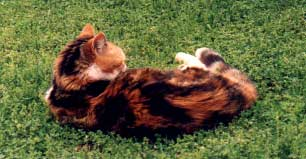

Rosemary's Page
Found in one of Rosemary's school exercise books:
Question: |
"What would I do if I had no physical or mental limitations? My ambitions and dream would be?" |
Rosemary: |
"It would be to live Day by Day" |
Question: |
"If I had six months to live. What would I do with my life? What changes would I make?" |
Rosemary: |
"I would live the same way, every day" |
Rosemary's message is that no matter what people's limitations or disabilities are, they want to live and they have hopes and dreams like everyone else. |
|
Rosemary died at the Royal Adelaide Hospital on 20th July, 1989 at the age of 16, following an unsuccessful operation to repair a faulty condition in her heart. Rosemary is much missed by her Dad and Family. I didn't forget you Rosemary!  Rosemary's cat Patches died on 16-May-2003 Updated: 4 November 2002, 19-May-2003 |
|